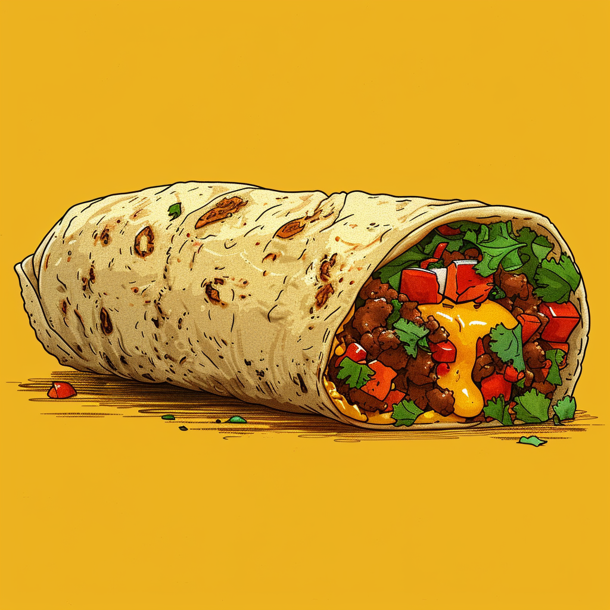

Breakfast Burrito

Description
This is a recipe from Daniel Gritzer. The original recipe page can be seen HERE
You can eat this at anytime. It doesn't have to been breakfast time. We all know breakfast time can be anytime. Theres is a lot of a variability here, use what you have in the fridge. Eggs are essential. Its way better with avocado and sour cream. Then add your carb. Potatoes or beans? Cheese is a must. Meat. Oh, the lovely meat.
Ingredients
- 4 large eggs
- Kosher salt and freshly ground black pepper
- 1 medium (4-ounce; 115g) Poblano pepper
- 8 ounces (225g) fresh Mexican chorizo (about 2 large links), casings removed
- 2 ounces (55g) shredded pepper jack cheese
- 2 large (10-inch) flour tortillas, warmed through on a dry griddle or cast iron pan
- 1/4 cup (2 ounces; 55g) warm refried beans, divided
- 2 tablespoons (1 ounce; 30g) crema or sour cream, divided
- 1/4 cup (2 ounces; 55g) guacamole, divided
- Hot sauce of your choice (optional)
Directions
- In a medium bowl, whisk eggs with a large pinch of salt and black pepper to taste until homogenous and no visible egg whites remain. Let stand 15 minutes.
- Using a broiler with the rack set in the highest position, or working directly over a gas flame, char Poblano pepper, rotating frequently, until skin is blistered and black all over. Transfer to a heatproof bowl, cover with plastic, and let stand for 5 minutes. Using paper towels, rub charred skin off pepper. Stem and seed pepper, finely dice the flesh, and reserve.
- In a medium nonstick skillet, add chorizo and turn heat to high. Cook, stirring and breaking chorizo into small pieces with a wooden spoon, until fat has rendered and chorizo is cooked through and is beginning to brown, about 5 minutes.
- Lower heat to medium-low, add eggs, and cook, stirring constantly, until eggs have formed curds but are still runny, 1 to 2 minutes. Stir in cheese and reserved Poblano pepper and continue to cook, stirring constantly, until cheese is melted and eggs are soft and fluffy, about 1 minute longer. Remove from heat.
- Working with one just-warmed tortilla at a time, lay tortilla on a work surface. Spread half the refried beans on center of tortilla, leaving about 2 inches of border on either side and 3 inches of border above and below. Top with 1 tablespoon (15g) crema and 2 tablespoons (30g) guacamole, spreading each in a thin, even layer on top of the refried beans.
- Pile half the eggs and cheese on top. Douse with as much hot sauce as you want.
- Fold the tortilla sides in over the filling. Then roll the bottom flap of tortilla up over the filling, holding the sides tight as you roll. Continue rolling until the burrito is sealed. Repeat with remaining tortilla and filling ingredients. Serve right away.
Notes
The burrito is best prepared shortly before serving, though the refried beans can be prepared up to three days in advance and the guacamole can be prepared a few hours in advance and refrigerated until ready to use; make sure to press plastic wrap directly against the surface of the guacamole to prevent oxidation, and reheat the refrieds before using.